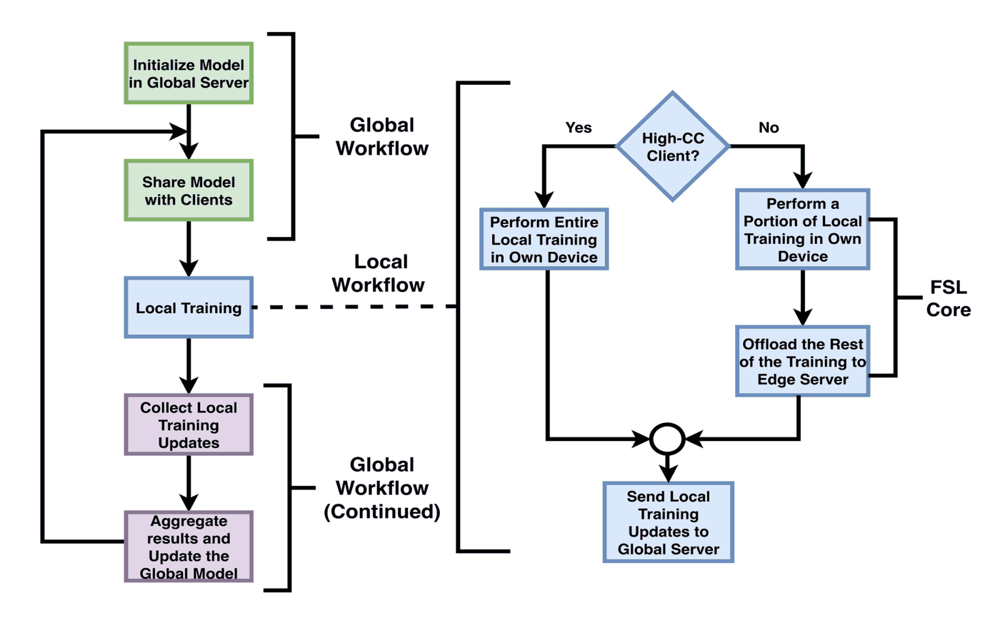
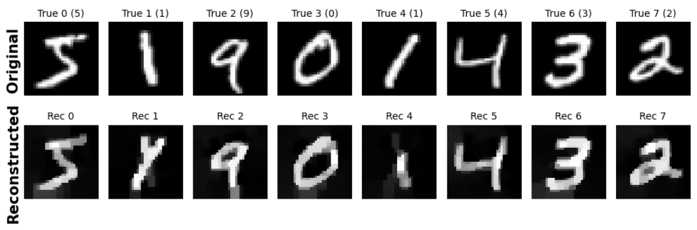

I'm a machine learning engineer who works on training models across many devices
without pulling everyone's data into one place. My Federated Split Learning framework,
published at IEEE AAIML 2026, cuts hardware use on edge devices by up to 58% and their
training time by up to 60%. I also build applied LLM, speech and NLP tools.
Master of Applied Computing, Wilfrid Laurier University. Based in Ontario, Canada.
Figure 1. Federated Split Learning. Each device trains only the first layers of the model
and hands the heavier layers to an edge server; the results are averaged into one shared model.
Raw data never leaves the device.
Research
Federated Split Learning: Distributed Local Training for Low Computational Unit Clients
K. H. Rahaman, L. Ferdouse, Y. Liu. International Conference on Advances in Artificial Intelligence and Machine Learning (AAIML), IEEE, 2026.
Federated Learning (FL) trains one shared model across many devices without collecting their data.
The catch is that every device has to train the whole model locally. Phones, sensors and other
low-capacity devices either slow every training round down or can't take part at all, and the
model loses whatever their data would have taught it.
Federated Split Learning (FSL) borrows the workload-offloading idea from Split Learning. Devices with
enough compute train the full model as usual. Low-capacity devices train only the first few layers
up to a cut layer, send the intermediate activations to a nearby edge server that runs the heavier
layers, and receive the gradients back. Every device's update is then aggregated into the global
model as in normal FL, so no device has to be upgraded and its raw data still never leaves it.
Up to about 58% less hardware usage and 60% less execution time on edge devices.
No noticeable loss in model accuracy compared with standard FL.
Tested with LeNet, AlexNet and ResNet-18 on CIFAR-10, Fashion-MNIST and MNIST.

The FSL workflow. The left side is the usual FL loop; the right side is the local step that FSL changes.
Efficient Federated Learning in Heterogeneous Networks with Synchronized Local Trainings While Ensuring Maximum Client Participation
Master's thesis, Wilfrid Laurier University, 2026. Supervised by Dr. Lilatul Ferdouse.
My thesis takes FSL further and tackles the three ways real FL networks are uneven: the devices
differ in compute power, their data differs from one another, and the updates they share can leak
private data.
Uneven devices: the FSL framework above, which lets low-capacity clients join compute-heavy FL tasks by offloading to an edge server.
Uneven data: integrated existing optimization algorithms for non-IID client data into FSL with minimal changes, and built a large-scale heterogeneous test network to evaluate them.
Privacy: designed Split-DP, a differential privacy mechanism for FSL with a formal privacy proof, and showed gradient inversion attacks that reconstruct client data succeed without it and fail with it.
Every project below links to its code. They're grouped by area; open "How it works" on any of them for the technical details.
Distributed and privacy-preserving ML
Federated Split Learning framework
Python, TensorFlow
The implementation behind the AAIML 2026 paper. It simulates an FL network where each client's
model is split at a chosen layer: the client part runs on the CPU (standing in for a weak device)
and the rest on the GPU (standing in for the edge server), trained jointly as one model.
How it works
Three model and dataset pairs: LeNet on CIFAR-10, AlexNet on Fashion-MNIST and ResNet-18 on MNIST, with data augmentation for the two larger models.
Configurable cut layers, including two ResNet-18 variants that split before or after the first residual block, to measure how much work can move off the device.
One gradient tape covers both halves, so the client and server portions are updated together on every step.
Weighted Federated Averaging combines client updates, and per-client accuracy and training time are recorded every round.
When each client's data looks very different, plain federated averaging drifts. This project tests
whether well-known fixes for that problem still work once the model is split between device and edge
server, which is the "uneven data" part of my thesis.
How it works
Builds a deliberately skewed 20-client network from Fashion-MNIST: 4 "generalist" clients get a balanced sample of all 10 classes, and 16 "specialist" clients each get 1,000 images from only two classes.
Implements FedProx (a proximal penalty that keeps local models near the global one), FedDyn (a dynamic regularizer using each client's history) and FedAdam (an Adam optimizer on the server) on top of the split model.
Samples a fraction of clients each round and aggregates their weight changes, weighted by sample count.
FL is often described as private because clients share only model updates, never data. This project
shows why that isn't enough: from the shared gradients alone, it reconstructs the images a client
trained on. It served as the threat model for Split-DP in my thesis.

Top: a client's real training images. Bottom: what the attack rebuilt from the client's gradients alone.How it works
Runs an FL simulation, captures the gradients a client sends, then starts from random noise and optimizes dummy images until their gradients match the captured ones.
Adapts the InverseFed method to TensorFlow, using total-variation regularization to keep reconstructions smooth and multiple random restarts to escape poor local minima.
Attacks both a single client's gradients and gradients aggregated across clients, on LeNet with CIFAR-10 and MNIST, with a PyTorch version for comparison.
Trains an attack detector across several IoT devices without pooling their network logs. The hard part
is that each device type records different features, so their data can't simply be averaged together.
How it works
Uses the TON_IoT dataset, whose sensor logs (fridge, thermostat, GPS tracker and others) each have their own columns.
Preprocessing builds one global feature space across all devices, fills missing features, label-encodes categories and fits a shared scaler, so every client's model has the same input shape.
Each client trains a GRU or LSTM classifier on attack versus normal traffic, with oversampling of the rare attack class, light noise augmentation, learning-rate decay and early stopping.
Client models are combined with sample-weighted Federated Averaging and evaluated on accuracy and AUC.
A clear, minimal FL implementation I wrote to show how the process works end to end, and the
starting point for FSL.
How it works
Splits CIFAR-10 evenly across 5 clients; the server shares a global model, each client trains it locally, and the server averages the results each round.
Supports LeNet, AlexNet and ResNet, and tracks global test accuracy round by round.
Runs as plain Python (clients.py and server.py) or as a notebook in Colab or Kaggle.
Python, PyTorch, Hugging Face Transformers, Streamlit
Built at Genuine Technology and Research. It estimates whether a piece of writing was produced by an
AI model, without needing to be trained on examples of AI text. You can paste text, upload a file or
give it the URL of an article.
How it works
Implements the zero-shot Binoculars method with two models, Falcon-7B and Falcon-7B-Instruct: the score divides how surprising the text is to one model by how surprising one model finds the other's predictions. Machine-written text gets a noticeably lower score than human writing.
Two thresholds let the user favour overall accuracy or a low false-positive rate, so human writing is rarely flagged by mistake.
For URLs it strips navigation, ads and boilerplate with Readability and BeautifulSoup to keep only the article text.
Long inputs are split at sentence boundaries into chunks of about 250 words, each scored separately in a Streamlit interface.
Turned about 3.4 hours of recorded Bangla speeches from a day-long conference into clean,
readable transcripts, with Bangla and English versions and summaries delivered as PDFs, all on
an ordinary CPU.
Batched inference made transcription about 6.8× faster: 295 seconds instead of 2,022 for the same test clip.
How it works
Benchmarked several setups first: the medium Whisper model produced text in the wrong script, the GPU ran out of memory with the large model, and large-v3-turbo was slower than batched large-v3. Whisper large-v3 with int8 quantization on CPU gave the best balance.
Switched to batched inference (batch size 8, beam search) with voice-activity detection to skip silence, and fixed the language to Bangla instead of auto-detecting it.
Cleaned the output automatically: collapsed words the model repeated in loops, dropped garbled or near-empty segments and grouped lines into paragraphs.
Generated bilingual transcript and summary PDFs with ReportLab, embedding a font that renders Bangla script correctly. Resumes where it left off if a long run is interrupted.
Built at Genuine Technology and Research. An agent that reads posts in a LinkedIn feed and reacts to each one
the way a person would, choosing between Like, Celebrate, Support, Love, Insightful and Funny.
How it works
Signs in and collects post links from the feed with Selenium, then opens each post and extracts its text.
Prompts Mixtral-8x7B-Instruct through the Hugging Face Inference API to choose the most fitting reaction, and parses the answer safely, defaulting to Like.
Applies the reaction in the browser, using Selenium for Like and on-screen image matching with PyAutoGUI for the other reactions in the hover menu.
Includes a prototype critique step that asks the model to check its choice against the post's three most common existing reactions.
Python, LlamaIndex, llama.cpp, LangChain, Hugging Face
A chatbot that answers questions about your own documents with an open-source model running on your own
GPU, so nothing is sent to an outside API.
How it works
Runs Mistral-7B-Instruct, quantized to 4 bits (GGUF), through llama.cpp with every layer offloaded to the GPU; it generates about 33 tokens per second.
Loads documents (including Word files), splits them into 256-token chunks and embeds them with the gte-large model into a LlamaIndex vector index.
Retrieves the most relevant chunks for each question and passes them to the model with a low temperature so answers stay grounded in the source.
Collected every TripAdvisor review of the main tourist attractions in Bangladesh and measured how
visitors feel about each place, using sentiment models trained on a much larger set of reviews.
27,327 reviews from 179 attractions, each with a 1–5 star rating, title and text.
CNN and LSTM classifiers reached 94.1% and 94.8% test accuracy on about 1M hotel reviews.
How it works
The scraper crawls the country's attraction listings, keeps attractions with more than five reviews, and follows each one's review pages to the end, saving the results with pandas.
Text is cleaned (HTML, punctuation, numbers, single letters and stop words removed), tokenized and padded to 100 tokens.
Models use frozen 100-dimensional GloVe word embeddings, compared across a simple dense network, a 1D CNN (128 filters) and an LSTM (128 units).
The trained models then score every scraped attraction review on a 0–10 sentiment scale.
A team course project on recommending books at scale. It shows how much a simple recommender slows
down on a large dataset, then speeds up the lookup step by spreading it across Spark workers.
How it works
Uses the Book-Crossing dataset of user ratings. A nearest-neighbours baseline with cosine similarity shows the cost of the naive approach.
Trains an ALS (alternating least squares) collaborative-filtering model in Spark MLlib, after cleaning ratings and indexing users and books consistently.
The parallel lookup broadcasts the user's factor vector to every worker and scores item partitions in parallel with a dot-product function, then compares completion time across partition counts. Our report measured up to a 75% reduction in lookup time.
LLM API with usage credits.
A FastAPI service that serves a local model through Ollama, protected by API keys that each carry a limited number of requests.
Food hall management system.
A team-built Django site where customers order from several food stalls, merchants track orders and admins add new stores.
Code Queries.
A Flask and SQLAlchemy app for saving, editing and commenting on programming questions.
Experience
Sep 2024 to Apr 2026
Research Assistant, Wilfrid Laurier University
Waterloo, Ontario. Distributed machine learning research, supervised by Dr. Lilatul Ferdouse.
Designed and built Federated Split Learning, which lets low-compute edge devices offload the heaviest layers of a CNN to an edge server while still taking part in federated training.
Cut on-device hardware usage by up to 58% and training time by up to 60% without a noticeable loss in accuracy; published at IEEE AAIML 2026.
Developed Split-DP, a lightweight differential privacy mechanism for FSL with a formal privacy proof, and showed that gradient inversion attacks fail against it.
Proved FSL's convergence and extended it to non-IID client data on a large-scale heterogeneous testbed.
Mar 2024 to Aug 2024
Junior Software Engineer (Applied AI), Genuine Technology and Research Ltd.
Dhaka, Bangladesh
Built an AI-generated text detector using the zero-shot Binoculars method with a pair of Falcon-7B models, accepting text, files and article URLs through a Streamlit app.
Built an autonomous LinkedIn agent that uses Mixtral-8x7B-Instruct to choose a reaction for each post in the feed and applies it in the browser.
Education
Master of Applied Computing
Wilfrid Laurier University, Waterloo. Graduated April 2026.
Bachelor of Science in Computer Science and Engineering